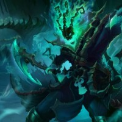

about
Sadistic and cunning, Thresh is an ambitious and restless spirit of the Shadow Isles. Once the custodian of countless arcane secrets, he was undone by a power greater than life or death, and now sustains himself by tormenting and breaking others with slow, excruciating inventiveness. His victims suffer far beyond their brief mortal coil as Thresh wreaks agony upon their souls, imprisoning them in his unholy lantern to torture for all eternity.
Looks

Role
Thresh is a support champion played on the bottom lane of the map assisting AD carries and protecting them.
Thresh binds an enemy in chains and pulls them toward him. Activating this ability a second time pulls Thresh to the enemy.
Thresh throws out a lantern that shields nearby allied Champions from damage. Allies can click the lantern to dash to Thresh.
Thresh's attacks wind up, dealing more damage the longer he waits between attacks. When activated, Thresh sweeps his chain, knocking all enemies hit in the direction of the blow.
Thresh creates walls around himself in pentagon which slows anyone that walks through them.